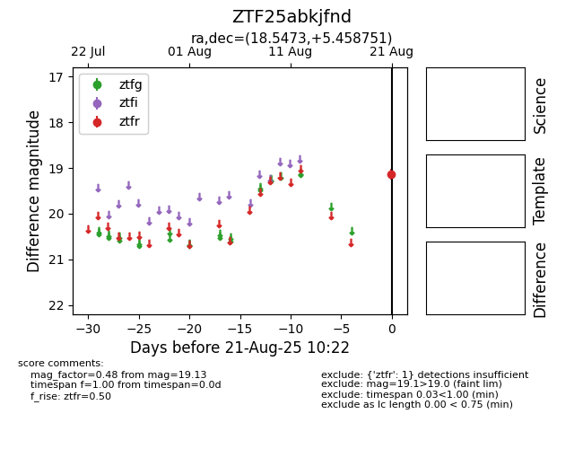

Target ZTF25abkjfnd at 2025-08-21 10:22, see:
FINK: fink-portal.org/ZTF25abkjfnd
Lasair: lasair-ztf.lsst.ac.uk/objects/ZTF25abkjfnd
ALeRCE: alerce.online/object/ZTF25abkjfnd
alt names
ZTF25abkjfnd (ztf,alerce)
coordinates:
equatorial (ra, dec) = (18.5473,+5.45875)
galactic (l, b) = (133.3548,-56.95186)
photometry
last ztfr=19.13
1 ztfr detections
